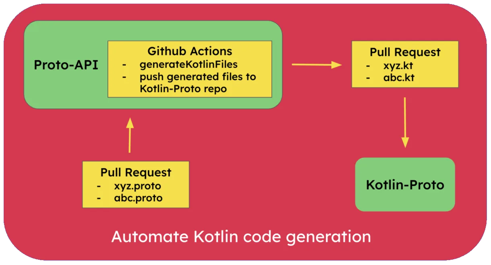

Sugar, Spice and Protobuf:
Perfect recipe for cross platform collaboration
“Protocol Buffers are language-neutral, platform-neutral extensible mechanisms for serializing structured data.”
- https://protobuf.dev/
Imagine your organization is developing applications for iOS, Android, Desktop, and Web platforms. Each of these platforms will need to display similar data, which often requires complex data structures and frequent updates. Maintaining consistency across all platforms can be challenging and time-consuming. This is where we can use Protocol Buffers (Protobuf or Proto) to build robust infrastructure for the engineering teams.
Protobuf was developed by Google. It is a language-neutral, platform-neutral, extensible mechanism for serializing structured data. It allows you to define the structure of your data once and use it across various platforms and languages, ensuring consistency and efficiency.
The data structure is defined in a file type called .proto. From this proto file, we can automatically generate code for different languages such as C++, C#, Python, Java, Kotlin, Objective C and even Swift. This means strongly typed data structures defined by the backend engineering team can be used by both iOS (Obj. C / Swift) and Android (Java / Kotlin) platforms.
Advantages of using Protobuf
Let’s look at some benefits of using Protobuf over REST API’s (json).
- Efficient network layer
Protobuf's help ensure your app requests resources from the server efficiently, with clear definitions provided by compact and efficient message formats. Smaller message sizes mean faster transmission times, which inherently improves network performance, reliability and also reduces engineering maintenance effort.
Imagine you're sending information between apps, like a grocery list. Protobufs will take up less space. This means the information will travel faster and use less network bandwidth. This makes our apps work better because they don't have to spend as much time or data sending information back and forth.
Schema Enforcement
Protobuf enforces strict schema definitions, and has strict data type enforcement. Therefore, we prevent any discrepancies and runtime errors during data exchange between services and applications. Our engineering infrastructure becomes robust and we can build reliable systems.Imagine you're packing gift boxes for different friends. Protobufs are like a packing list that says exactly what can go in each box. There is no more confusion, whether your friend receives an Integer or a String, a BigDecimal or a Float, a nullable or a non null element.
Backward Compatibility:
Protobuf supports backward compatibility, allowing changes to the data schema without breaking existing clients. New fields can be added, and old fields can be deprecated, ensuring that older clients can still parse and understand the updated data structure. This flexibility facilitates seamless updates and evolution of the data model, maintaining interoperability across different versions of the application.
Imagine you're building a fitness app that tracks user workouts. Initially, the network layer data has fields like duration and distance.
Scenario 1: Adding a new field
As the app progresses and new features are added, say you add a "calories burned" field. With Protobuf's backward compatibility, older app versions still process the data without recognizing the new field.
Scenario 2: Deprecating a Field
If we later on decide to use gps location coordinates in favor of distance field. Protobuf lets older app versions continue using "distance" while newer versions can switch to "GPS coordinates" seamlessly.
- Language Independence:
Protobufs act as a bridge between different platforms and teams. They ensure data consistency across the organization, regardless of the programming language engineering teams choose. This empowers teams to work independently with their preferred languages while still maintaining seamless communication and compatibility. The valuable time otherwise spent on ensuring compatibility and communication among teams is now freed for teams to focus on innovation and building even better solutions.
For e.g. in Android development, we used to build apps using Java and now everyone uses Kotlin, it’s relatively easier to migrate when using protos. Similarly for iOS if you’re migrating from Objective C to Swift, it is relatively easier too.
In this post we will focus on Android Development and see how to generate Kotlin code from Protobuf files and automate the process using GitHub Actions. We will use a library called Wire, which is developed by Square.
For each message type defined in the schema, Wire generates an immutable model class and its builder. The generated code looks like code you’d write by hand: it’s documented, formatted, and simple. Let’s see how to do this. For detailed documentation refer: https://square.github.io/wire/wire_compiler/
Protobuf File
A sample protobuf file user.proto defining an id, name and age which are strongly typed values as string and integer respectively.
Add Wire gradle plugin
The gradle plugin will add two tasks which can generate Kotlin classes.
generateProtos
generateMainProtos
Generated Kotlin Class
After running the gradle task, following Kotlin class is created.
Automating Kotlin file generation using Github Actions
We can create a GitHub actions workflow to automate Kotlin file generation whenever a pull request is raised to add a new proto file. We will need to commit these changes to the repository somehow, otherwise the files generated on CI server will be lost. We will push the generated Kotlin files to a separate repository and create a PR automatically using Github actions.
We have a repository for the backend engineers, where all the protos are stored. We will create a new repository for the mobile engineers to consume, which will have only the generated Kotlin files. This way backend eng. team(s) can work independently of the mobile app teams. Here is the GitHub actions workflow yaml file to do this.

Workflow yaml file
Feel free to have a look at the following Github repositories.
Proto-API - A repository containing .proto files.
Kotlin-Proto - A repository containing auto generated Kotlin files from the proto files in proto-api repository.
Page updated
Google Sites
Report abuse